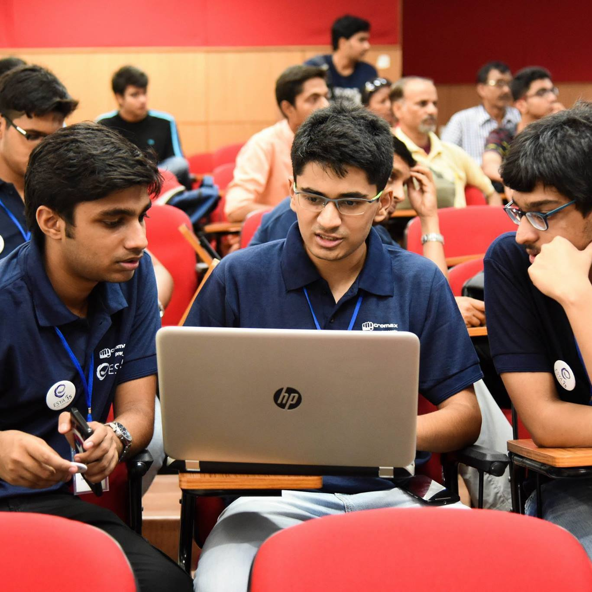
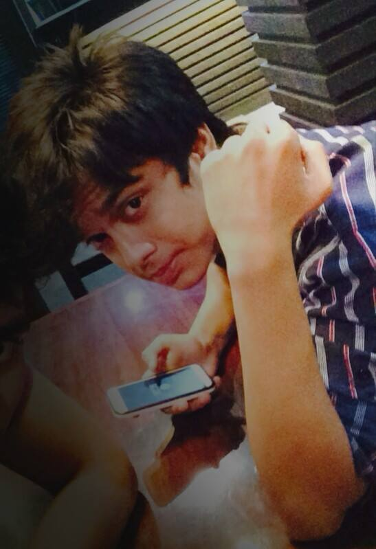

Facebook
Like Predictor
About
How it works
-

Predicting number of likes
Linear regression
We've used a lienar regression model with 'x' models to precict the number of likes for any given post, based on previous posts.
-

PREDICTING PEOPLE WHO'LL LIKE A POST
Simple histogram
To predict whether a given person will like a given post,we've used a histogram of probabilities ; any user with probability of liking post > threshold , we precict their like.
-

Problems we faces
Errors
Laters
-

Laters
Laters
Laters
-
Try
predicting
likes nows!
Our Amazing Team
Three undergrads @ IIITD

Anshuman Suri
Developer

Satyam Kumar
Developer

Potato
Lead Developer
Random stuff